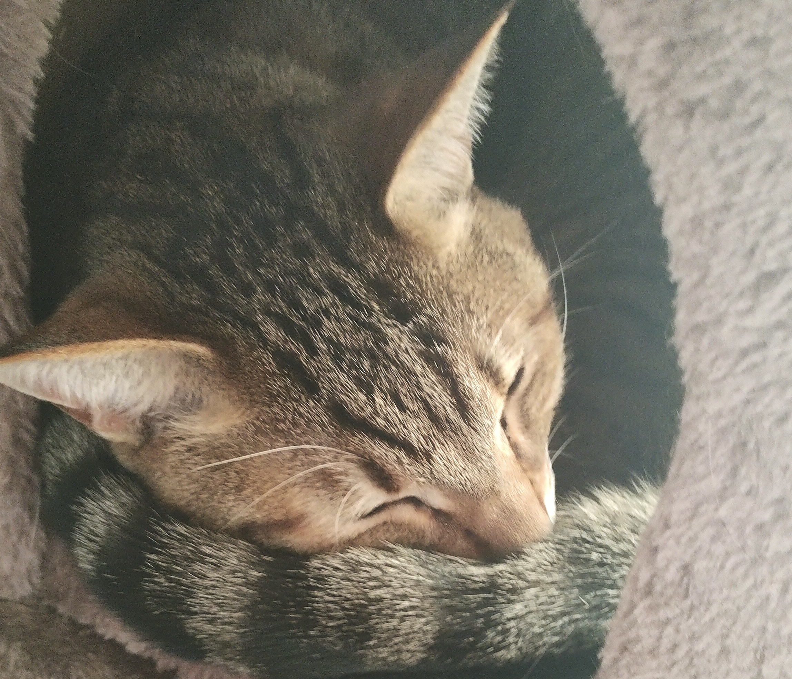

Team Member Profile
3z_at（サズアト）
学業と並行して、アプリケーション開発・技術発信・プロジェクト構想を推進しています。

基本情報
- 名前
- 3z_at（サズアト）
- 役割
- CEO・開発者/Product Development
- 担当
- プロダクト設計、アプリケーション開発、
- 公式リンク
- X / note（下部セクションよりアクセス）
- ひとこと
- ユーザー価値と実装品質の両立を重視し、継続的な改善を積み上げています。
プロフィール概要
3z_atは、pureUXにおいて開発領域を中心に活動しています。アプリケーション開発に加え、情報発信、ポッドキャスト運営、システム構想検討など、複数領域を横断しながらプロダクト価値の向上に取り組んでいます。
主要担当領域
- アプリケーション開発（設計・実装）
- 技術情報の発信（note / X）
- システム基盤構想 Anigma の仕様検討（個人プロジェクト）
所在地/Location
茨城県土浦市（常磐線沿線） / Tsuchiura, Ibaraki, Japan
関心領域
- Application Development
- System Architecture
- Security
- Gadget Research
- Community Communication
- Podcast Production
技術志向
- 主利用デバイス: Google Pixel 7 Pro
- 関心領域: セキュリティ、バックエンド開発
- 注力テーマ: 安全性と可用性を両立する実装設計
将来
セキュリティ分野への関心を起点に、将来的にはバックエンドおよびセキュリティ領域で、社会実装に耐える信頼性の高いシステム開発へ貢献することを目指しています。
公式リンク
チーム用と個人用が存在します。